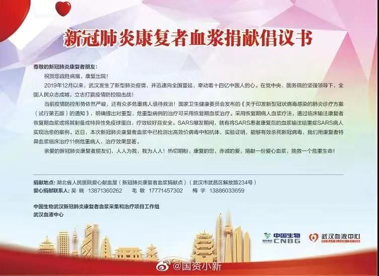

新冠肺炎康复者血浆成“救命稻草”？治疗11名危重病患效果显著，但风险不可忽视
原文链接 备份链接 2 月 13 日晚间，国药中国生物宣布了一项重要进展，在新冠肺炎康复者血浆中已检测出高效价病毒中和抗体，实验证明，能够有效杀死新冠病毒，“我们用康复者特异血浆临床治疗 11 例危重病人，治疗效果显著。” 中国生物官方宣 …

湖北省新冠肺炎疫情防控指挥部13日21时召开新闻发布会，邀请中央指导组医疗救治组专家、北京朝阳医院副院长童朝晖、广州支援武汉协和医院医疗队队长、广州医科大学附属第一医院副院长张挪富、武汉金银潭医院院长张定宇等介绍武汉市重症救治进展情况，并回答记者提问。
视频来源：新华视频
武汉市金银潭医院院长张定宇表示，医院正在开展康复病人恢复期血浆的输入，目前已显示出初步效果。康复患者体内有大量的综合抗体对抗病毒， 在此恳请康复后的患者积极来到医院，伸出胳膊，捐献血浆，共同拯救还在与病魔作斗争的病人。
针对高龄及有基础疾病患者，张定宇提示，要加强预警监测，发现有不好苗头抓紧处理，没有达到重症标准也可按重症进行治疗。
广州医科大学附属第一医院副院长张挪富表示，传染性的大小，与上呼吸道病毒的载量或者说数量有关系。广州医科大学附属第一医院前一段数据显示，ICU里面大概有60%以上的病人，上下呼吸道都能够检出病毒，而且病毒载量非常高，有的超过10的6次方以上。同时我们在血液里以及粪便里也找到了病毒，说明重症病人的病毒载量高。
而在轻症病人里面，上呼吸道病毒载量偏低，但这也不是绝对的，有些轻症病人因为本身老年人免疫力低下，可以作为病毒培养基，所以在早期，老年人会不会上呼吸道病毒载量一定高于轻症，现在没有这个数据。
理论上讲重症的传染性高于轻症，尤其是后期，作为病毒培养基可能病毒量更大。但轻症病人同样也具有传染性。
对于有数据显示60岁以上有重度肺炎的男性感染者是高危人群的问题，张挪富表示，一篇文章得出病死率不具备普遍性意义。病人发病时间、就诊时间、治疗场所、医务团队技术力量等多方面因素都有影响。60岁以上、有重度肺炎、又是高危人群里，在这个人群里有百分之九点多的死亡率是不奇怪的。钟院士团队有一篇文章是对一千多例（病例）的总结，符合这三种条件有30多人，这些人的病死率可能更高。一篇文章得出一个数据，对整体病死率没指导或者参考意义。
北京朝阳医院副院长童朝晖表示，新冠肺炎患者出现的是严重的呼吸衰竭，与03年的SARS相比，病情进展得更快，缺氧发展得很明显；此外，这次患者心脏受到的攻击非常厉害，救治起来的难度比以前要大。因此，我们提出要密切观察这类患者的生命体征，比如心率、血压、血氧的变化。
他同时指出，把临床诊断这个层次加进来以后，有利把很多我们过去认为是疑似的患者，按照临床诊断标准，纳入临床诊断。有利对临床诊断的患者进行管理。轻症患者可以进行隔离治疗，也更加有利于收治重症患者。能够让更多的过去认为是疑似患者，符合临床诊断的患者得到一个更好的收治和管理。
关于方舱医院的轻症患者符合什么标准要转诊到重症的定点医院？童朝晖透露，方舱医院建设时制定了工作手册，包括收治标准、重症转出标准、诊疗规范等。转出的标准包括年龄大、有多种基础疾病，治疗两天后仍大于38.5度，没有自主活动能力等。

新冠病毒特免血浆制品投入临床
据国资委官方微博消息，国药中国生物公司已完成对部分康复者血浆的采集工作，开展新冠病毒特免血浆制品和特免球蛋白的制备。经过严格的血液生物安全性检测，病毒灭活，抗病毒活性检测等，已成功制备出用于临床治疗的特免血浆！
在各方紧密合作下，2月8日，以新型冠状病毒感染的肺炎诊疗方案（试行第五版）为指南，首期在江夏区第一人民医院开展了3名危重患者的新冠特免血浆治疗，目前连同后续医院治疗的危重病人超过了10人。临床反映，患者接受治疗12至24小时后，实验室检测主要炎症指标明显下降！淋巴细胞比例上升，血氧饱和度、病毒载量等重点指标全面向好，临床体征和症状明显好转。

新冠特免血浆制品是由康复者捐献的含高效价新冠病毒特异性抗体的血浆，经过病毒灭活处理，并对抗新冠病毒中和抗体、多重病原微生物检测后制备而成，用于新冠肺炎危重患者的治疗。
从临床病理发生过程看，大部分新冠肺炎患者经过治疗康复后，身体内会产生针对新冠病毒的特异性抗体，可杀灭和清除病毒。目前在缺乏疫苗和特效治疗药物的前提下，采用这种特免血浆制品治疗新冠病毒感染是最为有效的方法，可大幅降低危重患者病死率。

国药中国生物公司表示，其承担的“2019-nCoV感染恢复期患者特异血浆和特异免疫球蛋白制备”项目是科技部组织制定的国家重点研发计划“公共安全风险防控与应急技术装备”重点专项。
附：新冠肺炎康复者血浆捐献倡议书
尊敬的新冠肺炎康复者朋友：
祝贺您战胜病魔，康复出院！
2019年12月以来，武汉发生了新型肺炎疫情，并迅速向全国蔓延，牵动着十四亿中国人的心。在党中央、国务院的坚强领导下，全国人民众志成城，立志打赢疫情防控阻击战！
当前疫情防控形势依然严峻，还有众多危重病人亟待救治！国家卫生健康委员会发布的《关于印发新型冠状病毒感染的肺炎诊疗方案（试行第五版）的通知》，明确提出对重型、危重型病例的治疗可采用恢复期血浆治疗。采用恢复期病人血浆疗法，通过临床输注康复者恢复期血浆或将其制备成特异性免疫球蛋白，疗效较好且安全。SARS爆发期间，就有将SARS患者康复后的血浆输注给重症SARS病人实现治愈的案例。近日，本次新冠肺炎康复者血浆中已检测出高效价病毒中和抗体，实验证明，能够有效杀死新冠病毒，我们用康复者特异血浆临床治疗11例危重病人，治疗效果显著。
亲爱的新冠肺炎康复者朋友们，人人为我，我为人人！热切期盼，康复的您，赤诚的爱，捐献一份爱心血浆，挽救一个危重生命！
捐献地点：湖北省人民医院爱心献血屋（新冠肺炎康复者血浆捐献点）（武汉市武昌区解放路234号）
爱心捐献联系人：
吴 晓 13871360262
毛 敏 17771457302
梅 宇 13886033659
中国生物武汉新冠肺炎康复者血浆采集和治疗项目工作组
武汉血液中心
综合人民日报微博、中国新闻网、观察者网


推荐阅读
点击大图 | 降成本、调税收、减房租……这个制造业大市18条措施来了！27万家中小企业受益
点击大图 | 2秒也会传染？关于新冠肺炎的24个新认识一定要知道！

原文链接 备份链接 2 月 13 日晚间，国药中国生物宣布了一项重要进展，在新冠肺炎康复者血浆中已检测出高效价病毒中和抗体，实验证明，能够有效杀死新冠病毒，“我们用康复者特异血浆临床治疗 11 例危重病人，治疗效果显著。” 中国生物官方宣 …
原文链接 备份链接 大范围推广仍需进一步临床试验的评估2月13日晚，在湖北省新冠疫情新闻发布会上，武汉市金银潭医院院长张定宇表示，康复后的患者体内有大量的中和抗体来抵抗新冠病毒。他呼吁康复期患者捐献血浆，共同拯救还在与病魔作斗争的病 …
原文链接 备份链接 记者：谢欣 编辑：许悦 “ 武汉金银潭医院院长张定宇对外表示，金银潭医院正在开展康复病人的恢复期血浆输注，目前也显示出一些初步效果，因为康复期患者体内有大量综合抗体来对抗病毒。 ” 2月13日晚，武汉金银潭医院院长张定 …
原文链接 备份链接 【财新网】（记者 邸宁）新冠疫情防控进入关键时期，重症病例不断增加，降低病死率，除了对重症患者进行支持救治，预防轻症患者疾病进展同样重要。 根据国家卫健委官方数据，截至2月9日24时，新冠病毒新增确诊病例3062 …
原文链接 备份链接 美国一个新冠肺炎患者使用瑞德西韦治愈的消息发布后，流传出很多该药有“奇效”的消息，但都仅仅是“美好的愿望”。 新冠肺炎确诊、疑似、死亡人数都在不断上升，人们太需要看到希望了。 瑞德西韦的前一代药物，对治疗猫冠状病 …